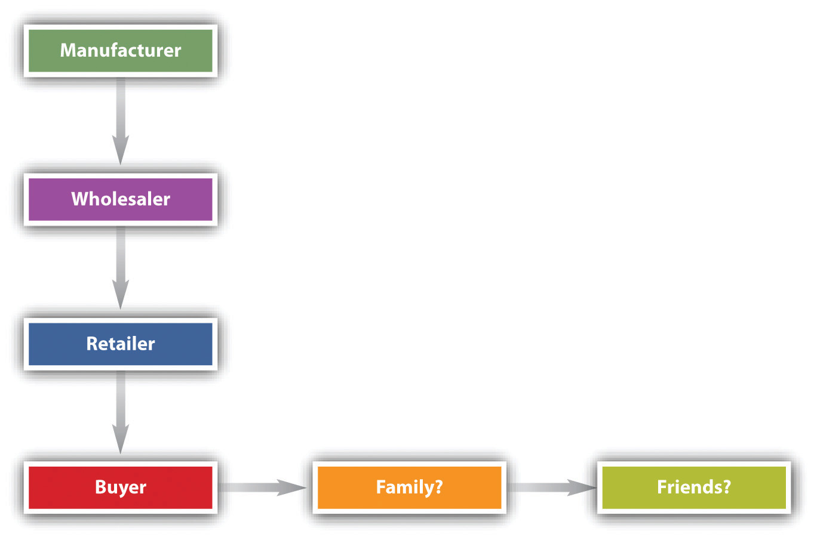

After reading this chapter, you should understand the following:
In previous chapters, we discussed remedies generally. In this chapter, we focus specifically on remedies available when a defective product causes personal injury or other damages. Products liability describes a type of claim, not a separate theory of liability. Products liability has strong emotional overtones—ranging from the prolitigation position of consumer advocates to the conservative perspective of the manufacturers.
The theory of caveat emptor—let the buyer beware—that pretty much governed consumer law from the early eighteenth century until the early twentieth century made some sense. A horse-drawn buggy is a fairly simple device: its workings are apparent; a person of average experience in the 1870s would know whether it was constructed well and made of the proper woods. Most foodstuffs 150 years ago were grown at home and “put up” in the home kitchen or bought in bulk from a local grocer, subject to inspection and sampling; people made home remedies for coughs and colds and made many of their own clothes. Houses and furnishings were built of wood, stone, glass, and plaster—familiar substances. Entertainment was a book or a piano. The state of technology was such that the things consumed were, for the most part, comprehensible and—very important—mostly locally made, which meant that the consumer who suffered damages from a defective product could confront the product’s maker directly. Local reputation is a powerful influence on behavior.
The free enterprise system confers great benefits, and no one can deny that: materialistically, compare the image sketched in the previous paragraph with circumstances today. But those benefits come with a cost, and the fundamental political issue always is who has to pay. Consider the following famous passage from Upton Sinclair’s great novel The Jungle. It appeared in 1906. He wrote it to inspire labor reform; to his dismay, the public outrage focused instead on consumer protection reform. Here is his description of the sausage-making process in a big Chicago meatpacking plant:
There was never the least attention paid to what was cut up for sausage; there would come all the way back from Europe old sausage that had been rejected, and that was moldy and white—it would be dosed with borax and glycerin, and dumped into the hoppers, and made over again for home consumption. There would be meat that had tumbled out on the floor, in the dirt and sawdust, where the workers had tramped and spit uncounted billions of consumption germs. There would be meat stored in great piles in rooms; and the water from leaky roofs would drip over it, and thousands of rats would race about on it. It was too dark in these storage places to see well, but a man could run his hand over these piles of meat and sweep off handfuls of the dried dung of rats. These rats were nuisances, and the packers would put poisoned bread out for them; they would die, and then rats, bread, and meat would go into the hoppers together. This is no fairy story and no joke; the meat would be shoveled into carts, and the man who did the shoveling would not trouble to lift out a rat even when he saw one—there were things that went into the sausage in comparison with which a poisoned rat was a tidbit. There was no place for the men to wash their hands before they ate their dinner, and so they made a practice of washing them in the water that was to be ladled into the sausage. There were the butt-ends of smoked meat, and the scraps of corned beef, and all the odds and ends of the waste of the plants, that would be dumped into old barrels in the cellar and left there.
Under the system of rigid economy which the packers enforced, there were some jobs that it only paid to do once in a long time, and among these was the cleaning out of the waste barrels. Every spring they did it; and in the barrels would be dirt and rust and old nails and stale water—and cartload after cartload of it would be taken up and dumped into the hoppers with fresh meat, and sent out to the public’s breakfast. Some of it they would make into “smoked” sausage—but as the smoking took time, and was therefore expensive, they would call upon their chemistry department, and preserve it with borax and color it with gelatin to make it brown. All of their sausage came out of the same bowl, but when they came to wrap it they would stamp some of it “special,” and for this they would charge two cents more a pound.Upton Sinclair, The Jungle (New York: Signet Classic, 1963), 136.
It became clear from Sinclair’s exposé that associated with the marvels of then-modern meatpacking and distribution methods was food poisoning: a true cost became apparent. When the true cost of some money-making enterprise (e.g., cigarettes) becomes inescapably apparent, there are two possibilities. First, the legislature can in some way mandate that the manufacturer itself pay the cost; with the meatpacking plants, that would be the imposition of sanitary food-processing standards. Typically, Congress creates an administrative agency and gives the agency some marching orders, and then the agency crafts regulations dictating as many industry-wide reform measures as are politically possible. Second, the people who incur damages from the product (1) suffer and die or (2) access the machinery of the legal system and sue the manufacturer. If plaintiffs win enough lawsuits, the manufacturer’s insurance company raises rates, forcing reform (as with high-powered muscle cars in the 1970s); the business goes bankrupt; or the legislature is pressured to act, either for the consumer or for the manufacturer.
If the industry has enough clout to blunt—by various means—a robust proconsumer legislative response so that government regulation is too lax to prevent harm, recourse is had through the legal system. Thus for all the talk about the need for tort reform (discussed later in this chapter), the courts play a vital role in policing the free enterprise system by adjudicating how the true costs of modern consumer culture are allocated.
Obviously the situation has improved enormously in a century, but one does not have to look very far to find terrible problems today. Consider the following, which occurred in 2009–10:
Products liability can also be a life-or-death matter from the manufacturer’s perspective. In 2009, Bloomberg BusinessWeek reported that the costs of product safety for manufacturing firms can be enormous: “Peanut Corp., based in Lynchberg, Va., has been driven into bankruptcy since health officials linked tainted peanuts to more than 600 illnesses and nine deaths. Mattel said the first of several toy recalls it announced in 2007 cut its quarterly operating income by $30 million. Earlier this decade, Ford Motor spent roughly $3 billion replacing 10.6 million potentially defective Firestone tires.”Michael Orey, “Taking on Toy Safety,” BusinessWeek, March 6, 2009, accessed March 1, 2011, http://www.businessweek.com/managing/content/mar2009/ca2009036_271002.htm. Businesses complain, with good reason, about the expenses associated with products-liability problems.
Although the debate has been heated and at times simplistic, the problem of products liability is complex and most of us regard it with a high degree of ambivalence. We are all consumers, after all, who profit greatly from living in an industrial society. In this chapter, we examine the legal theories that underlie products-liability cases that developed rapidly in the twentieth century to address the problems of product-caused damages and injuries in an industrial society.
In the typical products-liability case, three legal theories are asserted—a contract theory and two tort theories. The contract theory is warrantyA guarantee., governed by the UCC, and the two tort theories are negligenceThe legal theory imposing liability on a person for the proximate consequences of her carelessness. and strict products liabilityLiability imposed on a merchant-seller of defective goods without fault., governed by the common law. See Figure 17.1 "Major Products Liability Theories".
Figure 17.1 Major Products Liability Theories

As products became increasingly sophisticated and potentially dangerous in the twentieth century, and as the separation between production and consumption widened, products liability became a very important issue for both consumers and manufacturers. Millions of people every year are adversely affected by defective products, and manufacturers and sellers pay huge amounts for products-liability insurance and damages. The law has responded with causes of action that provide a means for recovery for products-liability damages.
The UCC governs express warranties and various implied warranties, and for many years it was the only statutory control on the use and meanings of warranties. In 1975, after years of debate, Congress passed and President Gerald Ford signed into law the Magnuson-Moss Act, which imposes certain requirements on manufacturers and others who warrant their goods. We will examine both the UCC and the Magnuson-Moss Act.
An express warrantyAny manifestation of the nature or quality of goods that becomes a basis of the bargain. is created whenever the seller affirms that the product will perform in a certain manner. Formal words such as “warrant” or “guarantee” are not necessary. A seller may create an express warranty as part of the basis for the bargain of sale by means of (1) an affirmation of a fact or promise relating to the goods, (2) a description of the goods, or (3) a sample or model. Any of these will create an express warranty that the goods will conform to the fact, promise, description, sample, or model. Thus a seller who states that “the use of rustproof linings in the cans would prevent discoloration and adulteration of the Perform solution” has given an express warranty, whether he realized it or not.Rhodes Pharmacal Co. v. Continental Can Co., 219 N.E.2d 726 (Ill. 1976). Claims of breach of express warranty are, at base, claims of misrepresentation.
But the courts will not hold a manufacturer to every statement that could conceivably be interpreted to be an express warranty. Manufacturers and sellers constantly “puff” their products, and the law is content to let them inhabit that gray area without having to make good on every claim. UCC 2-313(2) says that “an affirmation merely of the value of the goods or a statement purporting to be merely the seller’s opinion or commendation of the goods does not create a warranty.” Facts do.
It is not always easy, however, to determine the line between an express warranty and a piece of puffery. A salesperson who says that a strawberry huller is “great” has probably puffed, not warranted, when it turns out that strawberries run through the huller look like victims of a massacre. But consider the classic cases of the defective used car and the faulty bull. In the former, the salesperson said the car was in “A-1 shape” and “mechanically perfect.” In the latter, the seller said not only that the bull calf would “put the buyer on the map” but that “his father was the greatest living dairy bull.” The car, carrying the buyer’s seven-month-old child, broke down while the buyer was en route to visit her husband in the army during World War II. The court said that the salesperson had made an express warranty.Wat Henry Pontiac Co. v. Bradley, 210 P.2d 348 (Okla. 1949). The bull calf turned out to be sterile, putting the farmer on the judicial rather than the dairy map. The court said the seller’s spiel was trade talk, not a warranty that the bull would impregnate cows.Frederickson v. Hackney, 198 N.W. 806 (Minn. 1924).
Is there any qualitative difference between these decisions, other than the quarter century that separates them and the different courts that rendered them? Perhaps the most that can be said is that the more specific and measurable the statement’s standards, the more likely it is that a court will hold the seller to a warranty, and that a written statement is easier to construe as a warranty than an oral one. It is also possible that courts look, if only subliminally, at how reasonable the buyer was in relying on the statement, although this ought not to be a strict test. A buyer may be unreasonable in expecting a car to get 100 miles to the gallon, but if that is what the seller promised, that ought to be an enforceable warranty.
The CISG (Article 35) provides, “The seller must deliver goods which are of the quantity, quality and description required by the contract and which are contained or packaged in the manner required by the contract. [And the] goods must possess the qualities of goods which the seller has held out to the buyer as a sample or model.”
Express warranties are those over which the parties dickered—or could have. Express warranties go to the essence of the bargain. An implied warrantyA warranty imposed by law that comes along with a product automatically., by contrast, is one that circumstances alone, not specific language, compel reading into the sale. In short, an implied warranty is one created by law, acting from an impulse of common sense.
Section 2-314 of the UCC lays down the fundamental rule that goods carry an implied warranty of merchantabilityMerchant-seller’s implied warranty that goods are suitable for the goods’ normal uses. if sold by a merchant-seller. What is merchantability? Section 2-314(2) of the UCC says that merchantable goods are those that conform at least to the following six characteristics:
For the purposes of Section 2-314(2)(c) of the UCC, selling and serving food or drink for consumption on or off the premises is a sale subject to the implied warranty of merchantability—the food must be “fit for the ordinary purposes” to which it is put. The problem is common: you bite into a cherry pit in the cherry-vanilla ice cream, or you choke on the clam shells in the chowder. Is such food fit for the ordinary purposes to which it is put? There are two schools of thought. One asks whether the food was natural as prepared. This view adopts the seller’s perspective. The other asks what the consumer’s reasonable expectation was.
The first test is sometimes said to be the “natural-foreign” test. If the substance in the soup is natural to the substance—as bones are to fish—then the food is fit for consumption. The second test, relying on reasonable expectations, tends to be the more commonly used test.
The Convention provides (Article 35) that “unless otherwise agreed, the goods sold are fit for the purposes for which goods of the same description would ordinarily be used.”
Section 2-315 of the UCC creates another implied warranty. Whenever a seller, at the time she contracts to make a sale, knows or has reason to know that the buyer is relying on the seller’s skill or judgment to select a product that is suitable for the particular purpose the buyer has in mind for the goods to be sold, there is an implied warranty that the goods are fit for that purpose. For example, you go to a hardware store and tell the salesclerk that you need a paint that will dry overnight because you are painting your front door and a rainstorm is predicted for the next day. The clerk gives you a slow-drying oil-based paint that takes two days to dry. The store has breached an implied warranty of fitness for particular purposeA seller’s implied warranty that the goods will be suitable for the buyer’s expressed need..
Note the distinction between “particular” and “ordinary” purposes. Paint is made to color and when dry to protect a surface. That is its ordinary purpose, and had you said only that you wished to buy paint, no implied warranty of fitness would have been breached. It is only because you had a particular purpose in mind that the implied warranty arose. Suppose you had found a can of paint in a general store and told the same tale, but the proprietor had said, “I don’t know enough about that paint to tell you anything beyond what’s on the label; help yourself.” Not every seller has the requisite degree of skill and knowledge about every product he sells to give rise to an implied warranty. Ultimately, each case turns on its particular circumstances: “The Convention provides (Article 35): [The goods must be] fit for any particular purpose expressly or impliedly made known to the seller at the time of the conclusion of the contract, except where the circumstances show that the buyer did not rely, or that it was unreasonable for him to rely, on the seller’s skill and judgment.”
Article 2 contains other warranty provisions, though these are not related specifically to products liability. Thus, under UCC, Section 2-312, unless explicitly excluded, the seller warrants he is conveying good title that is rightfully his and that the goods are transferred free of any security interest or other lien or encumbrance. In some cases (e.g., a police auction of bicycles picked up around campus and never claimed), the buyer should know that the seller does not claim title in himself, nor that title will necessarily be good against a third party, and so subsection (2) excludes warranties in these circumstances. But the circumstances must be so obvious that no reasonable person would suppose otherwise.
In Menzel v. List, an art gallery sold a painting by Marc Chagall that it purchased in Paris.Menzel v. List, 246 N.E.2d 742 (N.Y. 1969). The painting had been stolen by the Germans when the original owner was forced to flee Belgium in the 1930s. Now in the United States, the original owner discovered that a new owner had the painting and successfully sued for its return. The customer then sued the gallery, claiming that it had breached the implied warranty of title when it sold the painting. The court agreed and awarded damages equal to the appreciated value of the painting. A good-faith purchaser who must surrender stolen goods to their true owner has a claim for breach of the implied warranty of title against the person from whom he bought the goods.
A second implied warranty, related to title, is that the merchant-seller warrants the goods are free of any rightful claim by a third person that the seller has infringed his rights (e.g., that a gallery has not infringed a copyright by selling a reproduction). This provision only applies to a seller who regularly deals in goods of the kind in question. If you find an old print in your grandmother’s attic, you do not warrant when you sell it to a neighbor that it is free of any valid infringement claims.
A third implied warranty in this context involves the course of dealing or usage of trade. Section 2-314(3) of the UCC says that unless modified or excluded implied warranties may arise from a course of dealing or usage of trade. If a certain way of doing business is understood, it is not necessary for the seller to state explicitly that he will abide by the custom; it will be implied. A typical example is the obligation of a dog dealer to provide pedigree papers to prove the dog’s lineage conforms to the contract.
It may seem that a person asserting a claim for breach of warranty will have a good chance of success under an express warranty or implied warranty theory of merchantability or fitness for a particular purpose. In practice, though, claimants are in many cases denied recovery. Here are four general problems:
In addition to these general problems, the claimant faces additional difficulties stemming directly from warranty theory, which we take up later in this chapter.
The UCC permits sellers to exclude or disclaim warranties in whole or in part. That’s reasonable, given that the discussion here is about contract, and parties are free to make such contracts as they see fit. But a number of difficulties can arise.
The simplest way for the seller to exclude express warranties is not to give them. To be sure, Section 2-316(1) of the UCC forbids courts from giving operation to words in fine print that negate or limit express warranties if doing so would unreasonably conflict with express warranties stated in the main body of the contract—as, for example, would a blanket statement that “this contract excludes all warranties express or implied.” The purpose of the UCC provision is to prevent customers from being surprised by unbargained-for language.
Implied warranties can be excluded easily enough also, by describing the product with language such as “as is” or “with all faults.” Nor is exclusion simply a function of what the seller says. The buyer who has either examined or refused to examine the goods before entering into the contract may not assert an implied warranty concerning defects an inspection would have revealed.
The Convention provides a similar rule regarding a buyer’s rights when he has failed to inspect the goods (Article 35): “The seller is not liable…for any lack of conformity of the goods if at the time of the conclusion of the contract the buyer knew or could not have been unaware of such lack of conformity.”
Section 2-316(2) of the UCC permits the seller to disclaim or modify the implied warranty of merchantability, as long as the statement actually mentions “merchantability” and, if it is written, is “conspicuous.” Note that the disclaimer need not be in writing, and—again—all implied warranties can be excluded as noted.
Section 2-316(2) of the UCC permits the seller also to disclaim or modify an implied warranty of fitness. This disclaimer or modification must be in writing, however, and must be conspicuous. It need not mention fitness explicitly; general language will do. The following sentence, for example, is sufficient to exclude all implied warranties of fitness: “There are no warranties that extend beyond the description on the face of this contract.”
Here is a standard disclaimer clause found in a Dow Chemical Company agreement: “Seller warrants that the goods supplied here shall conform to the description stated on the front side hereof, that it will convey good title, and that such goods shall be delivered free from any lawful security interest, lien, or encumbrance. SELLER MAKES NO WARRANTY OF MERCHANTABILITY OR FITNESS FOR A PARTICULAR USE. NOR IS THERE ANY OTHER EXPRESS OR IMPLIED WARRANTY.”
Express and implied warranties and their exclusion or limitation can often conflict. Section 2-317 of the UCC provides certain rules for deciding which should prevail. In general, all warranties are to be construed as consistent with each other and as cumulative. When that assumption is unreasonable, the parties’ intention governs the interpretation, according to the following rules: (a) exact or technical specifications displace an inconsistent sample or model or general language of description; (b) a sample from an existing bulk displaces inconsistent general language of description; (c) express warranties displace inconsistent implied warranties other than an implied warranty of fitness for a particular purpose. Any inconsistency among warranties must always be resolved in favor of the implied warranty of fitness for a particular purpose. This doesn’t mean that warranty cannot be limited or excluded altogether. The parties may do so. But in cases of doubt whether it or some other language applies, the implied warranty of fitness will have a superior claim.
After years of debate over extending federal law to regulate warranties, Congress enacted the Magnuson-Moss Federal Trade Commission Warranty Improvement Act (more commonly referred to as the Magnuson-Moss Act) and President Ford signed it in 1975. The act was designed to clear up confusing and misleading warranties, where—as Senator Magnuson put it in introducing the bill—“purchasers of consumer products discover that their warranty may cover a 25-cent part but not the $100 labor charge or that there is full coverage on a piano so long as it is shipped at the purchaser’s expense to the factory.…There is a growing need to generate consumer understanding by clearly and conspicuously disclosing the terms and conditions of the warranty and by telling the consumer what to do if his guaranteed product becomes defective or malfunctions.” The Magnuson-Moss Act only applies to consumer products (for household and domestic uses); commercial purchasers are presumed to be knowledgeable enough not to need these protections, to be able to hire lawyers, and to be able to include the cost of product failures into the prices they charge.
The act has several provisions to meet these consumer concerns; it regulates the content of warranties and the means of disclosing those contents. The act gives the Federal Trade Commission (FTC) the authority to promulgate detailed regulations to interpret and enforce it. Under FTC regulations, any written warranty for a product costing a consumer more than ten dollars must disclose in a single document and in readily understandable language the following nine items of information:
In addition to these requirements, the act requires that the warranty be labeled either a full or limited warranty. A full warrantyUnder the Magnuson-Moss Act, a complete promise of satisfaction limited only in duration. means (1) the defective product or part will be fixed or replaced for free, including removal and reinstallation; (2) it will be fixed within a reasonable time; (3) the consumer need not do anything unreasonable (like shipping the piano to the factory) to get warranty service; (4) the warranty is good for anyone who owns the product during the period of the warranty; (5) the consumer gets money back or a new product if the item cannot be fixed within a reasonable number of attempts. But the full warranty may not cover the whole product: it may cover only the hard drive in the computer, for example; it must state what parts are included and excluded. A limited warrantyUnder the Magnuson-Moss Act, a less-than-full warranty. is less inclusive. It may cover only parts, not labor; it may require the consumer to bring the product to the store for service; it may impose a handling charge; it may cover only the first purchaser. Both full and limited warranties may exclude consequential damages.
Disclosure of the warranty provisions prior to sale is required by FTC regulations; this can be done in a number of ways. The text of the warranty can be attached to the product or placed in close conjunction to it. It can be maintained in a binder kept in each department or otherwise easily accessible to the consumer. Either the binders must be in plain sight or signs must be posted to call the prospective buyer’s attention to them. A notice containing the text of the warranty can be posted, or the warranty itself can be printed on the product’s package or container.
Phantom warranties are addressed by the Magnuson-Moss Act. As we have seen, the UCC permits the seller to disclaim implied warranties. This authority often led sellers to give what were called phantom warranties—that is, the express warranty contained disclaimers of implied warranties, thus leaving the consumer with fewer rights than if no express warranty had been given at all. In the words of the legislative report of the act, “The bold print giveth, and the fine print taketh away.” The act abolished these phantom warranties by providing that if the seller gives a written warranty, whether express or implied, he cannot disclaim or modify implied warranties. However, a seller who gives a limited warranty can limit implied warranties to the duration of the limited warranty, if the duration is reasonable.
A seller’s ability to disclaim implied warranties is also limited by state law in two ways. First, by amendment to the UCC or by separate legislation, some states prohibit disclaimers whenever consumer products are sold.A number of states have special laws that limit the use of the UCC implied warranty disclaimer rules in consumer sales. Some of these appear in amendments to the UCC and others are in separate statutes. The broadest approach is that of the nine states that prohibit the disclaimer of implied warranties in consumer sales (Massachusetts, Connecticut, Maine, Vermont, Maryland, the District of Columbia, West Virginia, Kansas, Mississippi, and, with respect to personal injuries only, Alabama). There is a difference in these states whether the rules apply to manufacturers as well as retailers. Second, the UCC at 2-302 provides that unconscionable contracts or clauses will not be enforced. UCC 2-719(3) provides that limitation of damages for personal injury in the sale of “consumer goods is prima facie unconscionable, but limitation of damages where the loss is commercial is not.” (Unconscionability was discussed in Chapter 12 "Legality".)
A first problem with warranty theory, then, is that it’s possible to disclaim or limit the warranty. The worst abuses of manipulative and tricky warranties are eliminated by the Magnuson-Moss Act, but there are several other reasons that warranty theory is not the panacea for claimants who have suffered damages or injuries as a result of defective products.
A second problem with warranty law (after exclusion and modification of warranties) is that of privityThe relationship between two contracting parties.. Privity is the legal term for the direct connection between the seller and buyer, the two contracting parties. For decades, the doctrine of privity has held that one person can sue another only if they are in privity. That worked well in the days when most commerce was local and the connection between seller and buyer was immediate. But in a modern industrial (or postindustrial) economy, the product is transported through a much larger distribution system, as depicted in Figure 17.2 "Chain of Distribution". Two questions arise: (1) Is the manufacturer or wholesaler (as opposed to the retailer) liable to the buyer under warranty theory? and (2) May the buyer’s family or friends assert warranty rights?
Figure 17.2 Chain of Distribution
Suppose Carl Consumer buys a new lamp for his family’s living room. The lamp is defective: Carl gets a serious electrical shock when he turns it on. Certainly Carl would be covered by the implied warranty of merchantability: he’s in direct privity with the seller. But what if Carl’s spouse Carlene is injured? She didn’t buy the lamp; is she covered? Or suppose Carl’s friend David, visiting for an afternoon, gets zapped. Is David covered? This gets to horizontal privityThe relationship between the original supplier of a product and an ultimate user or a bystander affected by it., noncontracting parties who suffer damages from defective goods, such as nonbuyer users, consumers, and bystanders. Horizontal privity determines to whose benefit the warranty “flows”—who can sue for its breach. In one of its rare instances of nonuniformity, the UCC does not dictate the result. It gives the states three choices, labeled in Section 2-318 as Alternatives A, B, and C.
Alternative A says that a seller’s warranty extends “to any natural person who is in the family or household of his buyer or who is a guest in his home” provided (1) it is reasonable to expect the person suffering damages to use, consume, or be affected by the goods and (2) the warranty extends only to damages for personal injury.
Alternative B “extends to any natural person who may reasonably be expected to use, consume, or be affected by the goods, and who is injured in person by breach of the warranty.” It is less restrictive than the first alternative: it extends protection to people beyond those in the buyer’s home. For example, what if Carl took the lamp to a neighbor’s house to illuminate a poker table: under Alternative B, anybody at the neighbor’s house who suffered injury would be covered by the warranty. But this alternative does not extend protection to organizations; “natural person” means a human being.
Alternative C is the same as B except that it applies not only to any “natural person” but “to any person who is injured by breach of the warranty.” This is the most far-reaching alternative because it provides redress for damage to property as well as for personal injury, and it extends protection to corporations and other institutional buyers.
One may incidentally note that having three different alternatives for when third-party nonpurchasers can sue a seller or manufacturer for breach of warranty gives rise to unintended consequences. First, different outcomes are produced among jurisdictions, including variations in the common law. Second, the great purpose of the Uniform Commercial Code in promoting national uniformity is undermined. Third, battles over choice of law—where to file the lawsuit—are generated.
UCC, Section 2A-216, provides basically the same alternatives as applicable to the leasing of goods.
The traditional rule was that remote selling parties were not liable: lack of privity was a defense by the manufacturer or wholesaler to a suit by a buyer with whom these entities did not themselves contract. The buyer could recover damages from the retailer but not from the original manufacturer, who after all made the product and who might be much more financially able to honor the warranty. The UCC takes no position here, but over the last fifty years the judicial trend has been to abolish this vertical privityPrivity between parties (manufacturer and retailer) occupying adjoining levels in product distribution systems. requirement. (See Figure 17.2 "Chain of Distribution"; the entities in the distribution chain are those in vertical privity to the buyer.) It began in 1958, when the Michigan Supreme Court overturned the old theory in an opinion written by Justice John D. Voelker (who also wrote the novel Anatomy of a Murder, under the pen name Robert Traver).Spence v. Three Rivers Builders & Masonry Supply, Inc., 90 N.W.2d 873 (Mich. 1958).
After disclaimers and privity issues are resolved, other possible impediments facing the plaintiff in a products-liability warranty case are issues of assumption of the risk, contributory negligence, and comparative negligence (discussed in Chapter 7 "Introduction to Tort Law" on torts).
Courts uniformly hold that assumption of risk is a defense for sellers against a claim of breach of warranty, while there is a split of authority over whether comparative and contributory negligence are defenses. However, the courts’ use of this terminology is often conflicting and confusing. The ultimate question is really one of causation: was the seller’s breach of the warranty the cause of the plaintiff’s damages?
The UCC is not markedly helpful in clearing away the confusion caused by years of discussion of assumption of risk and contributory negligence. Section 2-715(2)(b) of the UCC says that among the forms of consequential damage for which recovery can be sought is “injury to person or property proximately resulting from any breach of warranty” (emphasis added). But “proximately” is a troublesome word. Indeed, ultimately it is a circular word: it means nothing more than that the defendant must have been a direct enough cause of the damages that the courts will impose liability. Comment 5 to this section says, “Where the injury involved follows the use of goods without discovery of the defect causing the damage, the question of ‘proximate’ turns on whether it was reasonable for the buyer to use the goods without such inspection as would have revealed the defects. If it was not reasonable for him to do so, or if he did in fact discover the defect prior to his use, the injury would not proximately result from the breach of warranty.”
Obviously if a sky diver buys a parachute and then discovers a few holes in it, his family would not likely prevail in court when they sued to recover for his death because the parachute failed to function after he jumped at 5,000 feet. But the general notion that it must have been reasonable for a buyer to use goods without inspection can make a warranty case difficult to prove.
A first basis of recovery in products-liability theory is breach of warranty. There are two types of warranties: express and implied. Under the implied category are three major subtypes: the implied warranty of merchantability (only given by merchants), the implied warranty of fitness for a particular purpose, and the implied warranty of title. There are a number of problems with the use of warranty theory: there must have been a sale of the goods; the plaintiff must bring the action within the statute of limitations; and the plaintiff must notify the seller within a reasonable time. The seller may—within the constraints of the Magnuson-Moss Act—limit or exclude express warranties or limit or exclude implied warranties. Privity, or lack of it, between buyer and seller has been significantly eroded as a limitation in warranty theory, but lack of privity may still affect the plaintiff’s recovery; the plaintiff’s assumption of the risk in using defective goods may preclude recovery.
Negligence is the second theory raised in the typical products-liability case. It is a tort theory (as compared to breach of warranty, which is of course a contract theory), and it does have this advantage over warranty theory: privity is never relevant. A pedestrian is struck in an intersection by a car whose brakes were defectively manufactured. Under no circumstances would breach of warranty be a useful cause of action for the pedestrian—there is no privity at all. Negligence is considered in detail in the Chapter 7 "Introduction to Tort Law" on torts; it basically means lack of due care.
Negligence theory in products liability is most useful in two types of cases: defective design and defective warnings.
Manufacturers can be, and often are, held liable for injuries caused by products that were defectively designed. The question is whether the designer used reasonable care in designing a product reasonably safe for its foreseeable use. The concern over reasonableness and standards of care are elements of negligence theory.
Defective-design cases can pose severe problems for manufacturing and safety engineers. More safety means more cost. Designs altered to improve safety may impair functionality and make the product less desirable to consumers. At what point safety comes into reasonable balance with performance, cost, and desirability (see Figure 17.3 "The Reasonable Design Balance") is impossible to forecast accurately, though some factors can be taken into account. For example, if other manufacturers are marketing comparable products whose design are intrinsically safer, the less-safe products are likely to lose a test of reasonableness in court.
Figure 17.3 The Reasonable Design Balance
We noted that a product may be defective if the manufacturer failed to warn the user of potential dangers. Whether a warning should have been affixed is often a question of what is reasonably foreseeable, and the failure to affix a warning will be treated as negligence. The manufacturer of a weed killer with poisonous ingredients is certainly acting negligently when it fails to warn the consumer that the contents are potentially lethal.
The law governing the necessity to warn and the adequacy of warnings is complex. What is reasonable turns on the degree to which a product is likely to be misused and, as the disturbing Laaperi case (Section 17.6.3 "Failure to Warn") illustrates, whether the hazard is obvious.
Negligence is an ancient cause of action and, as was discussed in the torts chapter, it carries with it a number of well-developed defenses. Two categories may be mentioned: common-law defenses and preemption.
Among the problems confronting a plaintiff with a claim of negligence in products-liability suits (again, these concepts are discussed in the torts chapter) are the following:
PreemptionThe theory that a federal law supersedes any inconsistent state law or regulation. (or “pre-emption”) is illustrated by this problem: suppose there is a federal standard concerning the product, and the defendant manufacturer meets it, but the standard is not really very protective. (It is not uncommon, of course, for federal standard makers of all types to be significantly influenced by lobbyists for the industries being regulated by the standards.) Is it enough for the manufacturer to point to its satisfaction of the standard so that such satisfaction preempts (takes over) any common-law negligence claim? “We built the machine to federal standards: we can’t be liable. Our compliance with the federal safety standard is an affirmative defense.”
Preemption is typically raised as a defense in suits about (1) cigarettes, (2) FDA-approved medical devices, (3) motor-boat propellers, (4) pesticides, and (5) motor vehicles. This is a complex area of law. Questions inevitably arise as to whether there was federal preemption, express or implied. Sometimes courts find preemption and the consumer loses; sometimes the courts don’t find preemption and the case goes forward. According to one lawyer who works in this field, there has been “increasing pressure on both the regulatory and congressional fronts to preempt state laws.” That is, the usual defendants (manufacturers) push Congress and the regulatory agencies to state explicitly in the law that the federal standards preempt and defeat state law.C. Richard Newsome and Andrew F. Knopf, “Federal Preemption: Products Lawyers Beware,” Florida Justice Association Journal, July 27, 2007, accessed March 1, 2011, http://www.newsomelaw.com/resources/articles/federal-preemption-products-lawyers-beware.
Negligence is a second possible cause of action for products-liability claimants. A main advantage is that no issues of privity are relevant, but there are often problems of proof; there are a number of robust common-law defenses, and federal preemption is a recurring concern for plaintiffs’ lawyers.
The warranties grounded in the Uniform Commercial Code (UCC) are often ineffective in assuring recovery for a plaintiff’s injuries. The notice requirements and the ability of a seller to disclaim the warranties remain bothersome problems, as does the privity requirement in those states that continue to adhere to it.
Negligence as a products-liability theory obviates any privity problems, but negligence comes with a number of familiar defenses and with the problems of preemption.
To overcome the obstacles, judges have gone beyond the commercial statutes and the ancient concepts of negligence. They have fashioned a tort theory of products liability based on the principle of strict products liability. One court expressed the rationale for the development of the concept as follows: “The rule of strict liability for defective products is an example of necessary paternalism judicially shifting risk of loss by application of tort doctrine because [the UCC] scheme fails to adequately cover the situation. Judicial paternalism is to loss shifting what garlic is to a stew—sometimes necessary to give full flavor to statutory law, always distinctly noticeable in its result, overwhelmingly counterproductive if excessive, and never an end in itself.”Kaiser Steel Corp. v. Westinghouse Electric Corp., 127 Cal. Rptr. 838 (Cal. 1976). Paternalism or not, strict liability has become a very important legal theory in products-liability cases.
The formulation of strict liability that most courts use is Section 402A of the Restatement of Torts (Second), set out here in full:
(1) One who sells any product in a defective condition unreasonably dangerous to the user or consumer or to his property is subject to liability for physical harm thereby caused to the ultimate user or consumer, or to his property, if
(a) the seller is engaged in the business of selling such a product, and
(b) it is expected to and does reach the user or consumer without substantial change in the condition in which it is sold.
(2) This rule applies even though
(a) the seller has exercised all possible care in the preparation and sale of his product, and
(b) the user or consumer has not bought the product from or entered into any contractual relation with the seller.
Section 402A of the Restatement avoids the warranty booby traps. It states a rule of law not governed by the UCC, so limitations and exclusions in warranties will not apply to a suit based on the Restatement theory. And the consumer is under no obligation to give notice to the seller within a reasonable time of any injuries. Privity is not a requirement; the language of the Restatement says it applies to “the user or consumer,” but courts have readily found that bystanders in various situations are entitled to bring actions under Restatement, Section 402A. The formulation of strict liability, though, is limited to physical harm. Many courts have held that a person who suffers economic loss must resort to warranty law.
Strict liability avoids some negligence traps, too. No proof of negligence is required. See Figure 17.4 "Major Difference between Warranty and Strict Liability".
Figure 17.4 Major Difference between Warranty and Strict Liability

Sales of goods but not sales of services are covered under the Restatement, Section 402A. Furthermore, the plaintiff will not prevail if the product was safe for normal handling and consumption when sold. A glass soda bottle that is properly capped is not in a defective condition merely because it can be broken if the consumer should happen to drop it, making the jagged glass dangerous. Chocolate candy bars are not defective merely because you can become ill by eating too many of them at once. On the other hand, a seller would be liable for a product defectively packaged, so that it could explode or deteriorate and change its chemical composition. A product can also be in a defective condition if there is danger that could come from an anticipated wrongful use, such as a drug that is safe only when taken in limited doses. Under those circumstances, failure to place an adequate dosage warning on the container makes the product defective.
The plaintiff bears the burden of proving that the product is in a defective condition, and this burden can be difficult to meet. Many products are the result of complex feats of engineering. Expert witnesses are necessary to prove that the products were defectively manufactured, and these are not always easy to come by. This difficulty of proof is one reason why many cases raise the failure to warn as the dispositive issue, since in the right case that issue is far easier to prove. The Anderson case (detailed in the exercises at the end of this chapter) demonstrates that the plaintiff cannot prevail under strict liability merely because he was injured. It is not the fact of injury that is dispositive but the defective condition of the product.
The product must be not merely dangerous but unreasonably dangerous. Most products have characteristics that make them dangerous in certain circumstances. As the Restatement commentators note, “Good whiskey is not unreasonably dangerous merely because it will make some people drunk, and is especially dangerous to alcoholics; but bad whiskey, containing a dangerous amount of fuel oil, is unreasonably dangerous.…Good butter is not unreasonably dangerous merely because, if such be the case, it deposits cholesterol in the arteries and leads to heart attacks; but bad butter, contaminated with poisonous fish oil, is unreasonably dangerous.”Restatement (Second) of Contracts, Section 402A(i). Under Section 402A, “the article sold must be dangerous to an extent beyond that which would be contemplated by the ordinary consumer who purchases it, with the ordinary knowledge common to the community as to its characteristics. ”
Even high risks of danger are not necessarily unreasonable. Some products are unavoidably unsafe; rabies vaccines, for example, can cause dreadful side effects. But the disease itself, almost always fatal, is worse. A product is unavoidably unsafe when it cannot be made safe for its intended purpose given the present state of human knowledge. Because important benefits may flow from the product’s use, its producer or seller ought not to be held liable for its danger.
However, the failure to warn a potential user of possible hazards can make a product defective under Restatement, Section 402A, whether unreasonably dangerous or even unavoidably unsafe. The dairy farmer need not warn those with common allergies to eggs, because it will be presumed that the person with an allergic reaction to common foodstuffs will be aware of them. But when the product contains an ingredient that could cause toxic effects in a substantial number of people and its danger is not widely known (or if known, is not an ingredient that would commonly be supposed to be in the product), the lack of a warning could make the product unreasonably dangerous within the meaning of Restatement, Section 402A. Many of the suits brought by asbestos workers charged exactly this point; The utility of an insulation product containing asbestos may outweigh the known or foreseeable risk to the insulation workers and thus justify its marketing. The product could still be unreasonably dangerous, however, if unaccompanied by adequate warnings. An insulation worker, no less than any other product user, has a right to decide whether to expose himself to the risk.Borel v. Fibreboard Paper Products Corp., 493 F.Zd 1076 (5th Cir. 1973). This rule of law came to haunt the Manville Corporation: it was so burdened with lawsuits, brought and likely to be brought for its sale of asbestosa known carcinogenthat it declared Chapter 11 bankruptcy in 1982 and shucked its liability.In re Johns-Manville Corp., 36 R.R. 727 (So. Dist. N.Y. 1984).
Restatement, Section 402A(1)(a), limits liability to sellers “engaged in the business of selling such a product.” The rule is intended to apply to people and entities engaged in business, not to casual one-time sellers. The business need not be solely in the defective product; a movie theater that sells popcorn with a razor blade inside is no less liable than a grocery store that does so. But strict liability under this rule does not attach to a private individual who sells his own automobile. In this sense, Restatement, Section 402A, is analogous to the UCC’s limitation of the warranty of merchantability to the merchant.
The requirement that the defendant be in the business of selling gets to the rationale for the whole concept of strict products liability: businesses should shoulder the cost of injuries because they are in the best position to spread the risk and distribute the expense among the public. This same policy has been the rationale for holding bailors and lessors liable for defective equipment just as if they had been sellers.Martin v. Ryder Rental, Inc., 353 A.2d 581 (Del. 1976).
Restatement, Section 402A(1)(b), limits strict liability to those defective products that are expected to and do reach the user or consumer without substantial change in the condition in which the products are sold. A product that is safe when delivered cannot subject the seller to liability if it is subsequently mishandled or changed. The seller, however, must anticipate in appropriate cases that the product will be stored; faulty packaging or sterilization may be the grounds for liability if the product deteriorates before being used.
Strict liability applies under the Restatement rule even though “the seller has exercised all possible care in the preparation and sale of his product.” This is the crux of “strict liability” and distinguishes it from the conventional theory of negligence. It does not matter how reasonably the seller acted or how exemplary is a manufacturer’s quality control system—what matters is whether the product was defective and the user injured as a result. Suppose an automated bottle factory manufactures 1,000 bottles per hour under exacting standards, with a rigorous and costly quality-control program designed to weed out any bottles showing even an infinitesimal amount of stress. The plant is “state of the art,” and its computerized quality-control operation is the best in the world. It regularly detects the one out of every 10,000 bottles that analysis has shown will be defective. Despite this intense effort, it proves impossible to weed out every defective bottle; one out of one million, say, will still escape detection. Assume that a bottle, filled with soda, finds its way into a consumer’s home, explodes when handled, sends glass shards into his eye, and blinds him. Under negligence, the bottler has no liability; under strict liability, the bottler will be liable to the consumer.
Under Restatement, Section 402A(2)(b), strict liability applies even though the user has not purchased the product from the seller nor has the user entered into any contractual relation with the seller. In short, privity is abolished and the injured user may use the theory of strict liability against manufacturers and wholesalers as well as retailers. Here, however, the courts have varied in their approaches; the trend has been to allow bystanders recovery. The Restatement explicitly leaves open the question of the bystander’s right to recover under strict liability.
Strict liability is liability without proof of negligence and without privity. It would seem that strict liability is the “holy grail” of products-liability lawyers: the complete answer. Well, no, it’s not the holy grail. It is certainly true that 402A abolishes the contractual problems of warranty. Restatement, Section 402A, Comment m, says,
The rule stated in this Section is not governed by the provisions of the Uniform Commercial Code, as to warranties; and it is not affected by limitations on the scope and content of warranties, or by limitation to “buyer” and “seller” in those statutes. Nor is the consumer required to give notice to the seller of his injury within a reasonable time after it occurs, as provided by the Uniform Act. The consumer’s cause of action does not depend upon the validity of his contract with the person from whom he acquires the product, and it is not affected by any disclaimer or other agreement, whether it be between the seller and his immediate buyer, or attached to and accompanying the product into the consumer’s hands. In short, “warranty” must be given a new and different meaning if it is used in connection with this Section. It is much simpler to regard the liability here stated as merely one of strict liability in tort.
Inherent in the Restatement’s language is the obvious point that if the product has been altered, losses caused by injury are not the manufacturer’s liability. Beyond that there are still some limitations to strict liability.
Comment m specifically says the cause of action under Restatement, Section 402A, is not affected by disclaimer. But in nonconsumer cases, courts have allowed clear and specific disclaimers. In 1969, the Ninth Circuit observed: “In Kaiser Steel Corp. the [California Supreme Court] court upheld the dismissal of a strict liability action when the parties, dealing from positions of relatively equal economic strength, contracted in a commercial setting to limit the defendant’s liability. The court went on to hold that in this situation the strict liability cause of action does not apply at all. In reaching this conclusion, the court in Kaiser reasoned that strict liability ‘is designed to encompass situations in which the principles of sales warranties serve their purpose “fitfully at best.”’ [Citation]” It concluded that in such commercial settings the UCC principles work well and “to apply the tort doctrines of products liability will displace the statutory law rather than bring out its full flavor.”Idaho Power Co. v. Westinghouse Electric Corp., 596 F.2d 924, 9CA (1979).
Conduct by the plaintiff herself may defeat recovery in two circumstances.
Courts have allowed the defense of assumption of the risk in strict products-liability cases. A plaintiff assumes the risk of injury, thus establishing defense to claim of strict products liability, when he is aware the product is defective, knows the defect makes the product unreasonably dangerous, has reasonable opportunity to elect whether to expose himself to the danger, and nevertheless proceeds to make use of the product. The rule makes sense.
Where the plaintiff does not know a use of the product is dangerous but nevertheless uses for an incorrect purpose, a defense arises, but only if such misuse was not foreseeable. If it was, the manufacturer should warn against that misuse. In Eastman v. Stanley Works, a carpenter used a framing hammer to drive masonry nails; the claw of the hammer broke off, striking him in the eye.Eastman v. Stanley Works, 907 N.E.2d 768 (Ohio App. 2009). He sued. The court held that while a defense does exist “where the product is used in a capacity which is unforeseeable by the manufacturer and completely incompatible with the product’s design…misuse of a product suggests a use which was unanticipated or unexpected by the product manufacturer, or unforeseeable and unanticipated [but] it was not the case that reasonable minds could only conclude that appellee misused the [hammer]. Though the plaintiff’s use of the hammer might have been unreasonable, unreasonable use is not a defense to a strict product-liability action or to a negligence action.”
The Restatement says recovery under strict liability is limited to “physical harm thereby caused to the ultimate user or consumer, or to his property,” but not other losses and not economic losses. In Atlas Air v. General Electric, a New York court held that the “economic loss rule” (no recovery for economic losses) barred strict products-liability and negligence claims by the purchaser of a used airplane against the airplane engine manufacturer for damage to the plane caused by an emergency landing necessitated by engine failure, where the purchaser merely alleged economic losses with respect to the plane itself, and not damages for personal injury (recovery for damage to the engine was allowed).Atlas Air v. General Electric, 16 A.D.3d 444 (N.Y.A.D. 2005).
But there are exceptions. In Duffin v. Idaho Crop Imp. Ass’n, the court recognized that a party generally owes no duty to exercise due care to avoid purely economic loss, but if there is a “special relationship” between the parties such that it would be equitable to impose such a duty, the duty will be imposed.Duffin v. Idaho Crop Imp. Ass’n, 895 P.2d 1195 (Idaho 1995). “In other words, there is an extremely limited group of cases where the law of negligence extends its protections to a party’s economic interest.”
The law develops. What seemed fitting in 1964 when the Restatement (Second) announced the state of the common-law rules for strict liability in Section 402A seemed, by 1997, not to be tracking common law entirely closely. The American Law Institute came out with the Restatement (Third) in that year. The Restatement changes some things. Most notably it abolishes the “unreasonably dangerous” test and substitutes a “risk-utility test.” That is, a product is not defective unless its riskiness outweighs its utility. More important, the Restatement (Third), Section 2, now requires the plaintiff to provide a reasonable alternative design to the product in question. In advancing a reasonable alternative design, the plaintiff is not required to offer a prototype product. The plaintiff must only show that the proposed alternative design exists and is superior to the product in question. The Restatement (Third) also makes it more difficult for plaintiffs to sue drug companies successfully. One legal scholar commented as follows on the Restatement (Third):
The provisions of the Third Restatement, if implemented by the courts, will establish a degree of fairness in the products liability arena. If courts adopt the Third Restatement’s elimination of the “consumer expectations test,” this change alone will strip juries of the ability to render decisions based on potentially subjective, capricious and unscientific opinions that a particular product design is unduly dangerous based on its performance in a single incident. More important, plaintiffs will be required to propose a reasonable alternative design to the product in question. Such a requirement will force plaintiffs to prove that a better product design exists other than in the unproven and untested domain of their experts’ imaginations.Quinlivan Wexler LLP, “The 3rd Restatement of Torts—Shaping the Future of Products Liability Law,” June 1, 1999, accessed March 1, 2011, http://library.findlaw.com/1999/Jun/1/127691.html.
Of course some people put more faith in juries than is evident here. The new Restatement has been adopted by a few jurisdictions and some cases the adopting jurisdictions incorporate some of its ideas, but courts appear reluctant to abandon familiar precedent.
Because the doctrines of breach of warranty and negligence did not provide adequate relief to those suffering damages or injuries in products-liability cases, beginning in the 1960s courts developed a new tort theory: strict products liability, restated in the Second Restatement, section 402A. Basically the doctrine says that if goods sold are unreasonably dangerous or defective, the merchant-seller will be liable for the immediate property loss and personal injuries caused thereby. But there remain obstacles to recovery even under this expanded concept of liability: disclaimers of liability have not completely been dismissed, the plaintiff’s conduct or changes to the goods may limit recovery, and—with some exceptions—the remedies available are limited to personal injury (and damage to the goods themselves); economic loss is not recoverable. Almost forty years of experience with the Second Restatement’s section on strict liability has seen changes in the law, and the Third Restatement introduces those, but it has not been widely accepted yet.
In 1988, The Conference Board published a study that resulted from a survey of more than 500 chief executive officers from large and small companies regarding the effects of products liability on their firms. The study concluded that US companies are less competitive in international business because of these effects and that products-liability laws must be reformed. The reform effort has been under way ever since, with varying degrees of alarms and finger-pointing as to who is to blame for the “tort crisis,” if there even is one. Business and professional groups beat the drums for tort reform as a means to guarantee “fairness” in the courts as well as spur US economic competitiveness in a global marketplace, while plaintiffs’ attorneys and consumer advocates claim that businesses simply want to externalize costs by denying recovery to victims of greed and carelessness.
Each side vilifies the other in very unseemly language: probusiness advocates call consumer-oriented states “judicial hell-holes” and complain of “well-orchestrated campaign[s] by tort lawyer lobbyists and allies to undo years of tort reform at the state level,”American Tort Reform Association website, accessed March 1, 2011, http://www.atra.org. while pro-plaintiff interests claim that there is “scant evidence” of any tort abuse. http://www.shragerlaw.com/html/legal_rights.html. It would be more amusing if it were not so shrill and partisan. Perhaps the most one can say with any certainty is that peoples’ perception of reality is highly colored by their self-interest. In any event, there have been reforms (or, as the detractors say, “deforms”).
Prodded by astute lobbying by manufacturing and other business trade associations, state legislatures responded to the cries of manufacturers about the hardships that the judicial transformation of the products-liability lawsuit ostensibly worked on them. Most state legislatures have enacted at least one of some three dozen “reform” proposal pressed on them over the last two decades. Some of these measures do little more than affirm and clarify case law. Among the most that have passed in several states are outlined in the next sections.
Perhaps nothing so frightens the manufacturer as the occasional reports of cases involving products that were fifty or sixty years old or more at the time they injured the plaintiff. Many states have addressed this problem by enacting the so-called statute of reposeA statute limiting the time that a product manufacturer can be liable for its defects.. This statute establishes a time period, generally ranging from six to twelve years; the manufacturer is not liable for injuries caused by the product after this time has passed.
Several states have enacted laws that prevent advances in technology from being held against the manufacturer. The fear is that a plaintiff will convince a jury a product was defective because it did not use technology that was later available. Manufacturers have often failed to adopt new advances in technology for fear that the change will be held against them in a products-liability suit. These new statutes declare that a manufacturer has a valid defense if it would have been technologically impossible to have used the new and safer technology at the time the product was manufactured.
Since it is often easier to prove that an injury resulted because the manufacturer failed to warn against a certain use than it is to prove an injury was caused by a defective design, manufacturers are subjected to a considerable degree of hindsight. Some of the state statutes limit the degree to which the failure to warn can be used to connect the product and the injury. For example, the manufacturer has a valid defense if it would have been impossible to foresee that the consumer might misuse the product in a certain way.
Contributory negligence is generally not a defense in a strict liability action, while assumption of risk is. In states that have enacted so-called comparative fault statutes, the user’s damages are pegged to the percentage of responsibility for the injury that the defendant bears. Thus if the consumer’s misuse of the product is assessed as having been 20 percent responsible for the accident (or for the extent of the injuries), the consumer is entitled to only 80 percent of damages, the amount for which the defendant manufacturer is responsible.
Not all state reform is favorable to manufacturers. Under the California Corporate Criminal Liability Act, which took effect twenty years ago, companies and managers must notify a state regulatory agency if they know that a product they are selling in California has a safety defect, and the same rule applies under certain federal standards, as Toyota executives were informed by their lawyers following alarms about sudden acceleration in some Toyota automobiles. Failure to provide notice may result in corporate and individual criminal liability.
Piecemeal reform of products-liability law in each state has contributed to the basic lack of uniformity from state to state, giving it a crazy-quilt effect. In the nineteenth century, this might have made little difference, but today most manufacturers sell in the national market and are subjected to the varying requirements of the law in every state. For years there has been talk in and out of Congress of enacting a federal products-liability law that would include reforms adopted in many states, as discussed earlier. So far, these efforts have been without much success.
Congressional tort legislation is not the only possible federal action to cope with products-related injuries. In 1972, Congress created the Consumer Product Safety Commission (CPSC) and gave the commission broad power to act to prevent unsafe consumer products. The CPSC can issue mandatory safety standards governing design, construction, contents, performance, packaging, and labeling of more than 10,000 consumer products. It can recall unsafe products, recover costs on behalf of injured consumers, prosecute those who violate standards, and require manufacturers to issue warnings on hazardous products. It also regulates four federal laws previously administered by other departments: the Flammable Fabrics Act, the Hazardous Substances Act, the Poison Prevention Packaging Act, and the Refrigerator Safety Act. In its early years, the CPSC issued standards for bicycles, power mowers, television sets, architectural glass, extension cords, book matches, pool slides, and space heaters. But the list of products is long, and the CPSC’s record is mixed: it has come under fire for being short on regulation and for taking too long to promulgate the relatively few safety standards it has issued in a decade.
Business advocates claim the American tort system—products-liability law included—is broken and corrupted by grasping plaintiffs’ lawyers; plaintiffs’ lawyers say businesses are greedy and careless and need to be smacked into recognition of its responsibilities to be more careful. The debate rages on, decade after decade. But there have been some reforms at the state level, and at the federal level the Consumer Product Safety Act sets out standards for safe products and requires recalls for defective ones. It is regularly castigated for (1) being officious and meddling or (2) being too timid.
Sheeskin v. Giant Food, Inc.
318 A.2d 874 (Md. App. 1974)
Davidson, J.
Every Friday for over two years Nathan Seigel, age 73, shopped with his wife at a Giant Food Store. This complex products liability case is before us because on one of these Fridays, 23 October 1970, Mr. Seigel was carrying a six-pack carton of Coca-Cola from a display bin at the Giant to a shopping cart when one or more of the bottles exploded. Mr. Seigel lost his footing, fell to the floor and was injured.
In the Circuit Court for Montgomery County, Mr. Seigel sued both the Giant Food, Inc., and the Washington Coca-Cola Bottling Company, Inc., for damages resulting from their alleged negligence and breach of an implied warranty. At the conclusion of the trial Judge Walter H. Moorman directed a verdict in favor of each defendant.…
In an action based on breach of warranty it is necessary for the plaintiff to show the existence of the warranty, the fact that the warranty was broken and that the breach of warranty was the proximate cause of the loss sustained. [UCC] 2-314.…The retailer, Giant Food, Inc., contends that appellant failed to prove that an implied warranty existed between himself and the retailer because he failed to prove that there was a sale by the retailer to him or a contract of sale between the two. The retailer maintains that there was no sale or contract of sale because at the time the bottles exploded Mr. Seigel had not yet paid for them. We do not agree.
[UCC] 2-314(1) states in pertinent part:
Unless excluded or modified, a warranty that the goods shall be merchantable is implied in a contract for their sale if the seller is a merchant with respect to goods of that kind.Uniform Commercial Code, Section 2-316. (emphasis added)
Thus, in order for the implied warranties of 2-314 to be applicable there must be a “contract for sale.” In Maryland it has been recognized that neither a completed ‘sale’ nor a fully executed contract for sale is required. It is enough that there be in existence an executory contract for sale.…
Here, the plaintiff has the burden of showing the existence of the warranty by establishing that at the time the bottles exploded there was a contract for their sale existing between himself and the Giant. [Citation] Mr. Titus, the manager of the Giant, testified that the retailer is a “self-service” store in which “the only way a customer can buy anything is to select it himself and take it to the checkout counter.” He stated that there are occasions when a customer may select an item in the store and then change his mind and put the item back. There was no evidence to show that the retailer ever refused to sell an item to a customer once it had been selected by him or that the retailer did not consider himself bound to sell an item to the customer after the item had been selected. Finally, Mr. Titus said that an employee of Giant placed the six-pack of Coca-Cola selected by Mr. Seigel on the shelf with the purchase price already stamped upon it. Mr. Seigel testified that he picked up the six-pack with the intent to purchase it.
We think that there is sufficient evidence to show that the retailer’s act of placing the bottles upon the shelf with the price stamped upon the six-pack in which they were contained manifested an intent to offer them for sale, the terms of the offer being that it would pass title to the goods when Mr. Seigel presented them at the check-out counter and paid the stated price in cash. We also think that the evidence is sufficient to show that Mr. Seigel’s act of taking physical possession of the goods with the intent to purchase them manifested an intent to accept the offer and a promise to take them to the checkout counter and pay for them there.
[UCC] 2-206 provides in pertinent part:
(1) Unless otherwise unambiguously indicated by the language or circumstances
(a) An offer to make a contract shall be construed as inviting acceptance in any manner and by any medium reasonable in the circumstances.…
The Official Comment 1 to this section states:
Any reasonable manner of acceptance is intended to be regarded as available unless the offeror has made quite clear that it will not be acceptable.
In our view the manner by which acceptance was to be accomplished in the transaction herein involved was not indicated by either language or circumstances. The seller did not make it clear that acceptance could not be accomplished by a promise rather than an act. Thus it is equally reasonable under the terms of this specific offer that acceptance could be accomplished in any of three ways: 1) by the act of delivering the goods to the check-out counter and paying for them; 2) by the promise to pay for the goods as evidenced by their physical delivery to the check-out counter; and 3) by the promise to deliver the goods to the check-out counter and to pay for them there as evidenced by taking physical possession of the goods by their removal from the shelf.
The fact that customers, having once selected goods with the intent to purchase them, are permitted by the seller to return them to the shelves does not preclude the possibility that a selection of the goods, as evidenced by taking physical possession of them, could constitute a reasonable mode of acceptance. Section 2-106(3) provides:
“Termination” occurs when either party pursuant to a power created by agreement or law puts an end to the contract otherwise then for its breach. On “termination” all obligations which are still executory on both sides are discharged but any right based on prior breach or performance survives.
Here the evidence that the retailer permits the customer to “change his mind” indicates only an agreement between the parties to permit the consumer to end his contract with the retailer irrespective of a breach of the agreement by the retailer. It does not indicate that an agreement does not exist prior to the exercise of this option by the consumer.…
Here Mr. Seigel testified that all of the circumstances surrounding his selection of the bottles were normal; that the carton in which the bottles came was not defective; that in lifting the carton from the shelf and moving it toward his basket the bottles neither touched nor were touched by anything other than his hand; that they exploded almost instantaneously after he removed them from the shelf; and that as a result of the explosion he fell injuring himself. It is obvious that Coca-Cola bottles which would break under normal handling are not fit for the ordinary use for which they were intended and that the relinquishment of physical control of such a defective bottle to a consumer constitutes a breach of warranty. Thus the evidence was sufficient to show that when the bottles left the retailer’s control they did not conform to the representations of the warranty of merchantability, and that this breach of the warranty was the cause of the loss sustained.…
[Judgment in favor of Giant Foods is reversed and the case remanded for a new trial. Judgment in favor of the bottler is affirmed because the plaintiff failed to prove that the bottles were defective when they were delivered to the retailer.]
Embs v. Pepsi-Cola Bottling Co. of Lexington, Kentucky, Inc.
528 S.W.2d 703 (Ky. 1975)
Jukowsky, J.
On the afternoon of July 25, 1970 plaintiff-appellant entered the self-service retail store operated by the defendant-appellee, Stamper’s Cash Market, Inc., for the purpose of “buying soft drinks for the kids.” She went to an upright soft drink cooler, removed five bottles and placed them in a carton. Unnoticed by her, a carton of Seven-Up was sitting on the floor at the edge of the produce counter about one foot from where she was standing. As she turned away from the cooler she heard an explosion that sounded “like a shotgun.” When she looked down she saw a gash in her leg, pop on her leg, green pieces of a bottle on the floor and the Seven-Up carton in the midst of the debris. She did not kick or otherwise come into contact with the carton of Seven-Up prior to the explosion. Her son, who was with her, recognized the green pieces of glass as part of a Seven-Up bottle.
She was immediately taken to the hospital by Mrs. Stamper, a managing agent of the store. Mrs. Stamper told her that a Seven-Up bottle had exploded and that several bottles had exploded that week. Before leaving the store Mrs. Stamper instructed one of her children to clean up the mess. Apparently, all of the physical evidence went out with the trash. The location of the Seven-Up carton immediately before the explosion was not a place where such items were ordinarily kept.…
When she rested her case, the defendants-appellees moved for a directed verdict in their favor. The trial court granted the motion on the grounds that the doctrine of strict product liability in tort does not extend beyond users and consumers and that the evidence was insufficient to permit an inference by a reasonably prudent man that the bottle was defective or if it was, when it became so.
In [Citation] we adopted the view of strict product liability in tort expressed in Section 402 A of the American Law Institute’s Restatement of Torts 2d.
(1) One who sells any product in a defective condition unreasonably dangerous to the user or to his property is subject to liability for physical harm thereby caused to the ultimate user or consumer, or to his property, if
(a) the seller is engaged in the business of selling such a product, and
(b) it is expected to and does reach the user or consumer without substantial change in the condition in which it was sold.
(2) The rule stated in Subsection (1) applies although
(a) the seller has exercised all possible care in the preparation and sale of his product, and
(b) the user or consumer has not bought the product from or entered into any contractual relation with the seller.
Comment f on that section makes it abundantly clear that this rule applies to any person engaged in the business of supplying products for use or consumption, including any manufacturer of such a product and any wholesale or retail dealer or distributor.
Comment c points out that on whatever theory, the justification for the rule has been said to be that the seller, by marketing his product for use and consumption, has undertaken and assumed a special responsibility toward any member of the consuming public who may be injured by it; that the public has the right to and does expect that reputable sellers will stand behind their goods; that public policy demands that the burden of accidental injuries caused by products intended for consumption be placed upon those who market them, and be treated as a cost of production against which liability insurance can be obtained; and that the consumer of such products is entitled to the maximum of protection at the hands of someone, and the proper persons to afford it are those who market the products.
The caveat to the section provides that the Institute expresses no opinion as to whether the rule may not apply to harm to persons other than users or consumers. Comment on caveat o states the Institute expresses neither approval nor disapproval of expansion of the rule to permit recovery by casual bystanders and others who may come in contact with the product, and admits there may be no essential reason why such plaintiffs should not be brought within the scope of protection afforded, other than they do not have the same reasons for expecting such protection as the consumer who buys a marketed product, and that the social pressure which has been largely responsible for the development of the rule has been a consumer’s pressure, and there is not the same demand for the protection of casual strangers.…
The caveat articulates the essential point: Once strict liability is accepted, bystander recovery is fait accompli.
Our expressed public policy will be furthered if we minimize the risk of personal injury and property damage by charging the costs of injuries against the manufacturer who can procure liability insurance and distribute its expense among the public as a cost of doing business; and since the risk of harm from defective products exists for mere bystanders and passersby as well as for the purchaser or user, there is no substantial reason for protecting one class of persons and not the other. The same policy requires us to maximize protection for the injured third party and promote the public interest in discouraging the marketing of products having defects that are a menace to the public by imposing strict liability upon retailers and wholesalers in the distributive chain responsible for marketing the defective product which injures the bystander. The imposition of strict liability places no unreasonable burden upon sellers because they can adjust the cost of insurance protection among themselves in the course of their continuing business relationship.
We must not shirk from extending the rule to the manufacturer for fear that the retailer or middleman will be impaled on the sword of liability without regard to fault. Their liability was already established under Section 402 A of the Restatement of Torts 2d. As a matter of public policy the retailer or middleman as well as the manufacturer should be liable since the loss for injuries resulting from defective products should be placed on those members of the marketing chain best able to pay the loss, who can then distribute such risk among themselves by means of insurance and indemnity agreements. [Citation]…
The result which we reach does not give the bystander a “free ride.” When products and consumers are considered in the aggregate, bystanders, as a class, purchase most of the same products to which they are exposed as bystanders. Thus, as a class, they indirectly subsidize the liability of the manufacturer, middleman and retailer and in this sense do pay for the insurance policy tied to the product.…
For the sake of clarity we restate the extension of the rule. The protections of Section 402 A of the Restatement of Torts 2d extend to bystanders whose injury from the defective product is reasonably foreseeable.…
The judgment is reversed and the cause is remanded to the Clark Circuit Court for further proceedings consistent herewith.
Stephenson, J. (dissenting):
I respectfully dissent from the majority opinion to the extent that it subjects the seller to liability. Every rule of law in my mind should have a rational basis. I see none here.
Liability of the seller to the user, or consumer, is based upon warranty. Restatement, Second, Torts s 403A. To extend this liability to injuries suffered by a bystander is to depart from any reasonable basis and impose liability by judicial fiat upon an otherwise innocent defendant. I do not believe that the expression in the majority opinion which justifies this rule for the reason that the seller may procure liability insurance protection is a valid legal basis for imposing liability without fault. I respectfully dissent.
Laaperi v. Sears, Roebuck & Co., Inc.
787 F.2d 726 C.A.1 (Mass. 1986)
Campbell, J.
In March 1976, plaintiff Albin Laaperi purchased a smoke detector from Sears. The detector, manufactured by the Pittway Corporation, was designed to be powered by AC (electrical) current. Laaperi installed the detector himself in one of the two upstairs bedrooms in his home.
Early in the morning of December 27, 1976, a fire broke out in the Laaperi home. The three boys in one of the upstairs bedrooms were killed in the blaze. Laaperi’s 13-year-old daughter Janet, who was sleeping in the other upstairs bedroom, received burns over 12 percent of her body and was hospitalized for three weeks.
The uncontroverted testimony at trial was that the smoke detector did not sound an alarm on the night of the fire. The cause of the fire was later found to be a short circuit in an electrical cord that was located in a cedar closet in the boys’ bedroom. The Laaperi home had two separate electrical circuits in the upstairs bedrooms: one which provided electricity to the outlets and one which powered the lighting fixtures. The smoke detector had been connected to the outlet circuit, which was the circuit that shorted and cut off. Because the circuit was shorted, the AC-operated smoke detector received no power on the night of the fire. Therefore, although the detector itself was in no sense defective (indeed, after the fire the charred detector was tested and found to be operable), no alarm sounded.
Laaperi brought this diversity action against defendants Sears and Pittway, asserting negligent design, negligent manufacture, breach of warranty, and negligent failure to warn of inherent dangers. The parties agreed that the applicable law is that of Massachusetts. Before the claims went to the jury, verdicts were directed in favor of defendants on all theories of liability other than failure to warn.…
Laaperi’s claim under the failure to warn theory was that he was unaware of the danger that the very short circuit which might ignite a fire in his home could, at the same time, incapacitate the smoke detector. He contended that had he been warned of this danger, he would have purchased a battery-powered smoke detector as a back-up or taken some other precaution, such as wiring the detector to a circuit of its own, in order better to protect his family in the event of an electrical fire.
The jury returned verdicts in favor of Laaperi in all four actions on the failure to warn claim. The jury assessed damages in the amount of $350,000 [$1,050,000, or about $3,400,000 in 2010 dollars] each of the three actions brought on behalf of the deceased sons, and $750,000 [about $2,500,000 in 2010 dollars] in the action brought on behalf of Janet Laaperi. The defendants’ motions for directed verdict and judgment notwithstanding the verdict were denied, and defendants appealed.
Defendants ask us to declare that the risk that an electrical fire could incapacitate an AC-powered smoke detector is so obvious that the average consumer would not benefit from a warning. This is not a trivial argument; in earlier—some might say sounder—days, we might have accepted it.… Our sense of the current state of the tort law in Massachusetts and most other jurisdictions, however, leads us to conclude that, today, the matter before us poses a jury question; that “obviousness” in a situation such as this would be treated by the Massachusetts courts as presenting a question of fact, not of law. To be sure, it would be obvious to anyone that an electrical outage would cause this smoke detector to fail. But the average purchaser might not comprehend the specific danger that a fire-causing electrical problem can simultaneously knock out the circuit into which a smoke detector is wired, causing the detector to fail at the very moment it is needed. Thus, while the failure of a detector to function as the result of an electrical malfunction due, say, to a broken power line or a neighborhood power outage would, we think, be obvious as a matter of law, the failure that occurred here, being associated with the very risk—fire—for which the device was purchased, was not, or so a jury could find.…
Finally, defendants contend that the award of $750,000 [$2.5 million in 2010 dollars] in damages to Janet Laaperi was excessive, and should have been overturned by the district court.…
Janet Laaperi testified that on the night of the fire, she woke up and smelled smoke. She woke her friend who was sleeping in her room, and they climbed out to the icy roof of the house. Her father grabbed her from the roof and took her down a ladder. She was taken to the hospital. Although she was in “mild distress,” she was found to be “alert, awake, [and] cooperative.” Her chest was clear. She was diagnosed as having first and second degree burns of her right calf, both buttocks and heels, and her left lower back, or approximately 12 percent of her total body area. She also suffered from a burn of her tracheobronchial mucosa (i.e., the lining of her airway) due to smoke inhalation, and multiple superficial lacerations on her right hand.
The jury undoubtedly, and understandably, felt a great deal of sympathy for a young girl who, at the age of 13, lost three brothers in a tragic fire. But by law the jury was only permitted to compensate her for those damages associated with her own injuries. Her injuries included fright and pain at the time of and after the fire, a three-week hospital stay, some minor discomfort for several weeks after discharge, and a permanent scar on her lower back. Plaintiff has pointed to no cases, and we have discovered none, in which such a large verdict was sustained for such relatively minor injuries, involving no continuing disability.
The judgments in favor of Albin Laaperi in his capacity as administrator of the estates of his three sons are affirmed. In the action on behalf of Janet Laaperi, the verdict of the jury is set aside, the judgment of the district court vacated, and the cause remanded to that court for a new trial limited to the issue of damages.
Products liability describes a type of claim—for injury caused by a defective product—and not a separate theory of liability. In the typical case, three legal doctrines may be asserted: (1) warranty, (2) negligence, and (3) strict liability.
If a seller asserts that a product will perform in a certain manner or has certain characteristics, he has given an express warranty, and he will be held liable for damages if the warranty is breached—that is, if the goods do not live up to the warranty. Not every conceivable claim is an express warranty; the courts permit a certain degree of “puffing.”
An implied warranty is one created by law. Goods sold by a merchant-seller carry an implied warranty of merchantability, meaning that they must possess certain characteristics, such as being of average quality for the type described and being fit for the ordinary purposes for which they are intended.
An implied warranty of fitness for a particular purpose is created whenever a seller knows or has reason to know that the buyer is relying on the seller’s knowledge and skill to select a product for the buyer’s particular purposes.
Under UCC Article 2, the seller also warrants that he is conveying good title and that the goods are free of any rightful claim by a third person.
UCC Article 2 permits sellers to exclude or disclaim warranties in whole or in part. Thus a seller may exclude express warranties. He may also disclaim many implied warranties—for example, by noting that the sale is “as is.” The Magnuson-Moss Act sets out certain types of information that must be included in any written warranty. The act requires the manufacturer or seller to label the warranty as either “full” or “limited” depending on what types of defects are covered and what the customer must do to obtain repair or replacement. The act also abolishes “phantom warranties.”
Privity once stood as a bar to recovery in suits brought by those one or more steps removed in the distribution chain from the party who breached a warranty. But the nearly universal trend in the state courts has been to abolish privity as a defense.
Because various impediments stand in the way of warranty suits, courts have adopted a tort theory of strict liability, under which a seller is liable for injuries resulting from the sale of any product in a defective condition if it is unreasonably dangerous to the user or consumer. Typical issues in strict liability cases are these: Is the defendant a seller engaged in the business of selling? Was the product sold in a defective condition? Was it unreasonably dangerous, either on its face or because of a failure to warn? Did the product reach the consumer in an unchanged condition? Strict liability applies regardless of how careful the seller was and regardless of his lack of contractual relation with the consumer or user.
Manufacturers can also be held liable for negligence—most often for faulty design of products and inadequate warnings about the hazards of using the product.
The products-liability revolution prompted many state legislatures to enact certain laws limiting to some degree the manufacturer’s responsibility for defective products. These laws include statutes of repose and provide a number of other defenses.
In a products-liability case
An implied warranty of merchantability
A possible defense to breach of warranty is
Under the strict liability rule in Restatement, Section 402A, the seller is liable for all injuries resulting from a product
An individual selling her car could be liable